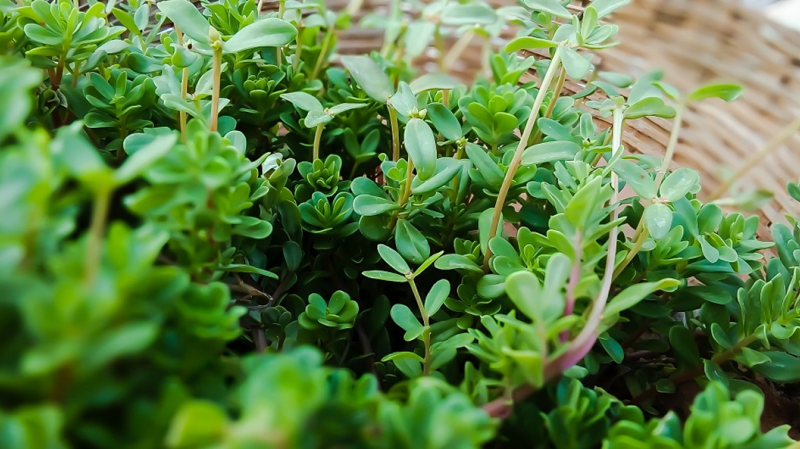

Desde tiempos ancestrales, las plantas medicinales se han utilizado para tratar enfermedades y malestares comunes, gracias a las propiedades curativas que estas poseen. Las plantas medicinales contienen sustancias químicas en sus hojas o flores, el tallo o la raíz, de manera que, a través de distintos métodos de preparación, pueden aplicarse para tratar distintos padecimientos. De acuerdo con las propiedades de cada planta, estas pueden utilizarse para tratar desde un simple dolor de cabeza hasta padecimientos más serios.

¿Qué son las plantas medicinales?
Las plantas medicinales son aquellos vegetales que elaboran unos metabolitos secundarios, llamados “principios activos”, sustancias químicas que ejercen una acción farmacológica, ya sea beneficiosa o perjudicial, sobre el organismo vivo. Por ello, este tipo de plantas se utilizan como remedio natural, según sus propiedades, para aliviar enfermedades y malestares comunes, así como un medio de prevención de distintos padecimientos.
¿Cómo se preparan?
Según la planta medicinal de la que se trate, estas tienen propiedades específicas para curar o prevenir determinadas enfermedades o malestares. Por lo general, los compuestos útiles se encuentran en ciertas partes de la planta, como sus semillas, sus raíces, sus hojas o sus flores. Por lo tanto, la parte utilizable de la planta depende de la especie en cuestión, y existen distintas formas de preparación y administración.Entre las plantas medicinales más comunes están:
- Infusión: Los principios activos de la planta se disuelven en agua mediante una cocción para crear una tisana bebible
- Emplastos: Se preparan machacando la parte de la planta que contiene las propiedades curativas para aplica directamente sobre el área afectada.
- Ensalada: Es una forma de ingerir las hierbas medicinales en una forma directa.
- Jarabes: Se preparan extrayendo con agua los componentes activos o medicinales de la planta y disolviendo con azúcar o miel para ingerirlo.
- Jugos: Se obtienen al exprimir o licuar las plantas frescas o sus frutos.
- Vapores: Los vapores de ciertas plantas, emitidos por la acción del calor, son utilizados para el tratamiento de las afecciones del aparato respiratorio.